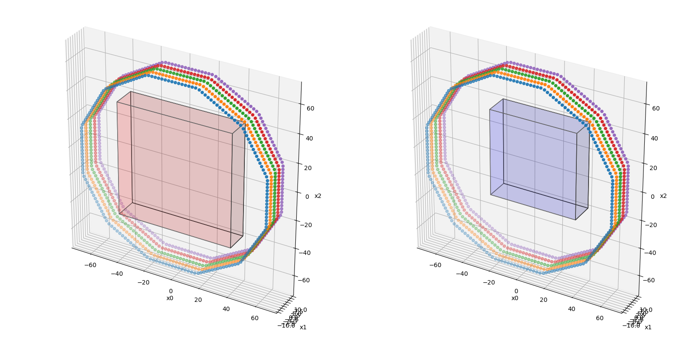
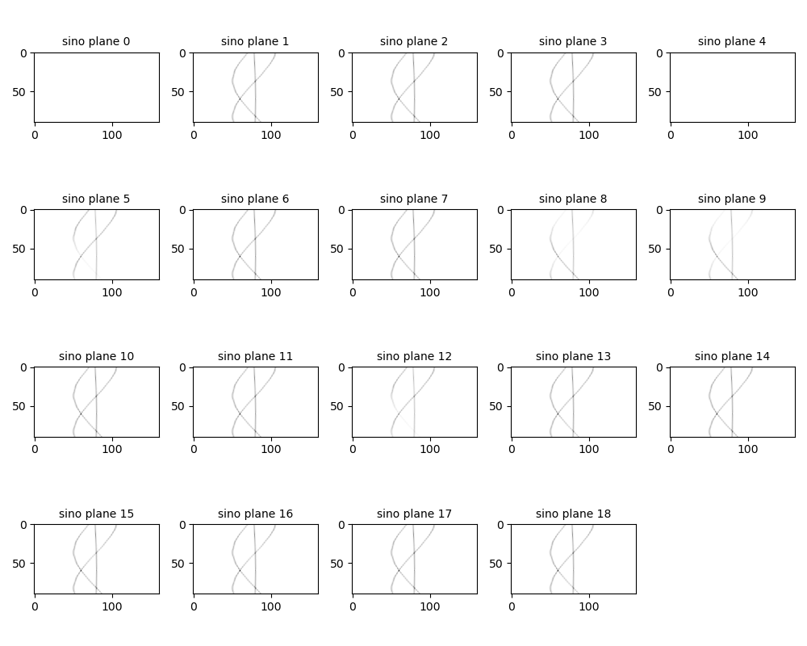
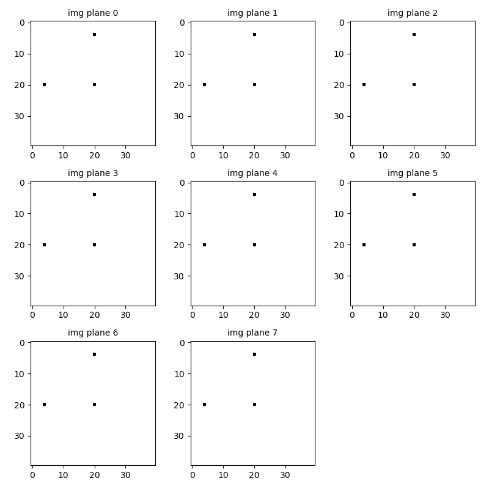
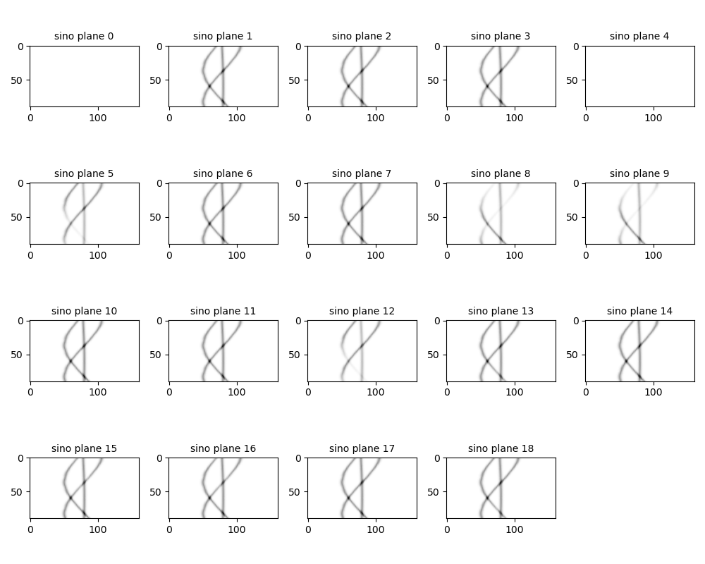
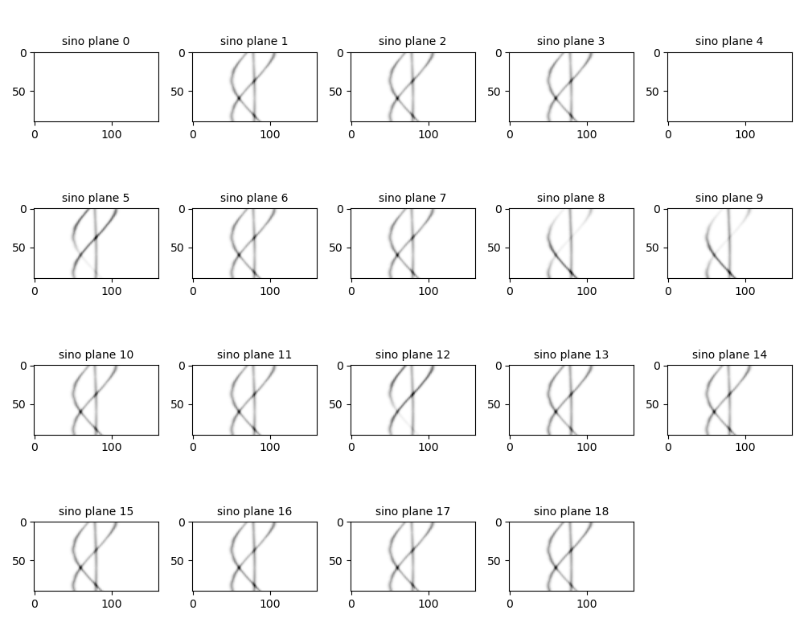
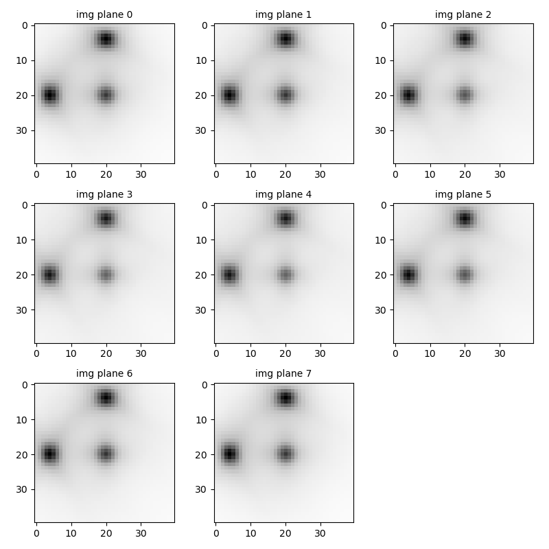

Note
Go to the end to download the full example code.
PET non-TOF sinogram projector
In this example we will show how to setup and use a PET sinogram projector consisting of a geometrical forward projector (Joseph’s method), a resolution model and a correction for attenuation.
Tip
parallelproj is python array API compatible meaning it supports different
array backends (e.g. numpy, cupy, torch, …) and devices (CPU or GPU).
Choose your preferred array API xp and device dev below.
19 import array_api_compat.numpy as xp
20
21 # import array_api_compat.cupy as xp
22 # import array_api_compat.torch as xp
23
24 import parallelproj
25 from array_api_compat import to_device
26 import array_api_compat.numpy as np
27 import matplotlib.pyplot as plt
28
29 # choose a device (CPU or CUDA GPU)
30 if "numpy" in xp.__name__:
31 # using numpy, device must be cpu
32 dev = "cpu"
33 elif "cupy" in xp.__name__:
34 # using cupy, only cuda devices are possible
35 dev = xp.cuda.Device(0)
36 elif "torch" in xp.__name__:
37 # using torch valid choices are 'cpu' or 'cuda'
38 dev = "cuda"
setup a small regular polygon PET scanner with 5 rings (polygons)
setup the LOR descriptor that defines the sinogram
58 lor_desc = parallelproj.RegularPolygonPETLORDescriptor(
59 scanner,
60 radial_trim=10,
61 max_ring_difference=2,
62 sinogram_order=parallelproj.SinogramSpatialAxisOrder.RVP,
63 )
Defining a non-TOF projector
RegularPolygonPETProjector can be used to define a non-TOF projector
that combines the scanner, LOR and image geometry. The latter is defined by
the image shape, the voxel size, and the image origin.
73 # define a first projector using an image with 40x8x40 voxels of size 2x2x2 mm
74 # where the image center is at world coordinate (0, 0, 0)
75 proj = parallelproj.RegularPolygonPETProjector(
76 lor_desc, img_shape=(40, 8, 40), voxel_size=(2.0, 2.0, 2.0)
77 )
78
79 # define a second projector using an image with 20x8x30 voxels of size 3x2x2 mm
80 # that is off-center
81 proj2 = parallelproj.RegularPolygonPETProjector(
82 lor_desc,
83 img_shape=(20, 8, 30),
84 voxel_size=(3.0, 2.0, 2.0),
85 img_origin=(-19, -7, -19),
86 )
Visualize the scanner and image geometry
RegularPolygonPETProjector.show_geometry() can be used
to visualize the scanner and image geometry
95 fig = plt.figure(figsize=(16, 8))
96 ax1 = fig.add_subplot(121, projection="3d")
97 ax2 = fig.add_subplot(122, projection="3d")
98 proj.show_geometry(ax1)
99 proj2.show_geometry(ax2, color=(0, 0, 1))
100 fig.tight_layout()
101 fig.show()

Simple geometrical forward projections
RegularPolygonPETProjector.__call__() allows us to calculate
the geometrical forward projection (line integrals by Joseph’s method)
though a voxelize image.
111 # setup a simple test image containing a few "hot rods"
112 x = xp.zeros(proj.in_shape, device=dev, dtype=xp.float32)
113 x[proj.in_shape[0] // 2, :, proj.in_shape[2] // 2] = 1.0
114 x[4, :, proj.in_shape[2] // 2] = 1.0
115 x[proj.in_shape[0] // 2, :, 4] = 1.0
116
117 x_fwd = proj(x)
118
119 # visualize the forward projection
120 fig, ax = plt.subplots(4, 5, figsize=(2 * 5, 2 * 4))
121 vmax = float(xp.max(x_fwd))
122 for i in range(20):
123 axx = ax.ravel()[i]
124 if i < proj.lor_descriptor.num_planes:
125 axx.imshow(
126 parallelproj.to_numpy_array(x_fwd[:, :, i].T),
127 cmap="Greys",
128 vmin=0,
129 vmax=vmax,
130 )
131 axx.set_title(f"sino plane {i}", fontsize="medium")
132 else:
133 axx.set_axis_off()
134 fig.tight_layout()
135 fig.show()
136
137 # visualize the back projection including the attenuation resolution model
138 fig2, ax2 = plt.subplots(3, 3, figsize=(8, 8))
139 vmax = float(xp.max(x))
140 for i in range(8):
141 axx = ax2.ravel()[i]
142 axx.imshow(
143 parallelproj.to_numpy_array(x[:, i, :].T), cmap="Greys", vmin=0, vmax=vmax
144 )
145 axx.set_title(f"img plane {i}", fontsize="medium")
146 ax2.ravel()[-1].set_axis_off()
147 fig2.tight_layout()
148 fig2.show()


Simple geometrical back projections
RegularPolygonPETProjector.adjoint() allows us to calculate
the geometrical back projection (the adjoint of the forward projection)
157 x_fwd_back = proj.adjoint(x_fwd)
Adding an image-based resolution model
The GaussianFilterOperator and CompositeLinearOperator can be used
to setup a projection operator that includes an image-based resolution model
If our forward operator \(A = P G\) is given by the composition of an
image-based resolution model \(G\) and a projection operator \(P\),
its adjoint is given by \(A^H = G^H P^H\) which is implemented by
CompositeLinearOperator.adjoint()
172 # setup a simple image-based resolution model with an Gaussian FWHM of 4.5mm
173 res_model = parallelproj.GaussianFilterOperator(
174 proj.in_shape, sigma=4.5 / (2.35 * proj.voxel_size)
175 )
176
177 proj_with_res_model = parallelproj.CompositeLinearOperator((proj, res_model))
178
179 # forward project with resolution model
180 x_fwd2 = proj_with_res_model(x)
181 x_fwd2_back = proj_with_res_model.adjoint(x_fwd2)
182
183 # visualize the forward projection including the resolution model
184 fig, ax = plt.subplots(4, 5, figsize=(2 * 5, 2 * 4))
185 vmax = float(xp.max(x_fwd2))
186 for i in range(20):
187 axx = ax.ravel()[i]
188 if i < proj.lor_descriptor.num_planes:
189 axx.imshow(
190 parallelproj.to_numpy_array(x_fwd2[:, :, i].T),
191 cmap="Greys",
192 vmin=0,
193 vmax=vmax,
194 )
195 axx.set_title(f"sino plane {i}", fontsize="medium")
196 else:
197 axx.set_axis_off()
198 fig.tight_layout()
199 fig.show()

Adding the effect of attenuation
ElementwiseMultiplicationOperator can be used to add effect of attenuation
which is modeled as an element-wise multiplication in the sinogram domain
Including the effect of attenuation, our forward operator can now be described as \(A = \text{diag}(a) P G\), where \(a\) is the attenuation sinogram
213 # setup an attenuation image containing the attenuation coeff. of water
214 # (in 1/mm)
215 x_att = xp.full(proj.in_shape, 0.01, device=dev, dtype=xp.float32)
216
217 # forward project the attenuation image
218 x_att_fwd = proj(x_att)
219
220 # calculate the attenuation sinogram
221 att_sino = xp.exp(-x_att_fwd)
222 att_op = parallelproj.ElementwiseMultiplicationOperator(att_sino)
223
224 # setup a forward projector containing the attenuation and resolution
225 proj_with_att_and_res_model = parallelproj.CompositeLinearOperator(
226 (att_op, proj, res_model)
227 )
228
229 # forward project with resolution and attenuation model
230 x_fwd3 = proj_with_att_and_res_model(x)
231
232 # back project the forward projection including the resolution and
233 # attenuation model
234 x_fwd3_back = proj_with_att_and_res_model.adjoint(x_fwd3)
235
236 # visualize the forward projection including the attenuation resolution model
237 fig, ax = plt.subplots(4, 5, figsize=(2 * 5, 2 * 4))
238 vmax = float(xp.max(x_fwd3))
239 for i in range(20):
240 axx = ax.ravel()[i]
241 if i < proj.lor_descriptor.num_planes:
242 axx.imshow(
243 parallelproj.to_numpy_array(x_fwd3[:, :, i].T),
244 cmap="Greys",
245 vmin=0,
246 vmax=vmax,
247 )
248 axx.set_title(f"sino plane {i}", fontsize="medium")
249 else:
250 axx.set_axis_off()
251 fig.tight_layout()
252 fig.show()
253
254 # visualize the back projection including the attenuation resolution model
255 fig2, ax2 = plt.subplots(3, 3, figsize=(8, 8))
256 vmax = float(xp.max(x_fwd3_back))
257 for i in range(8):
258 axx = ax2.ravel()[i]
259 axx.imshow(
260 parallelproj.to_numpy_array(x_fwd3_back[:, i, :].T),
261 cmap="Greys",
262 vmin=0,
263 vmax=vmax,
264 )
265 axx.set_title(f"img plane {i}", fontsize="medium")
266 ax2.ravel()[-1].set_axis_off()
267 fig2.tight_layout()
268 fig2.show()


Total running time of the script: (0 minutes 4.127 seconds)
Related examples